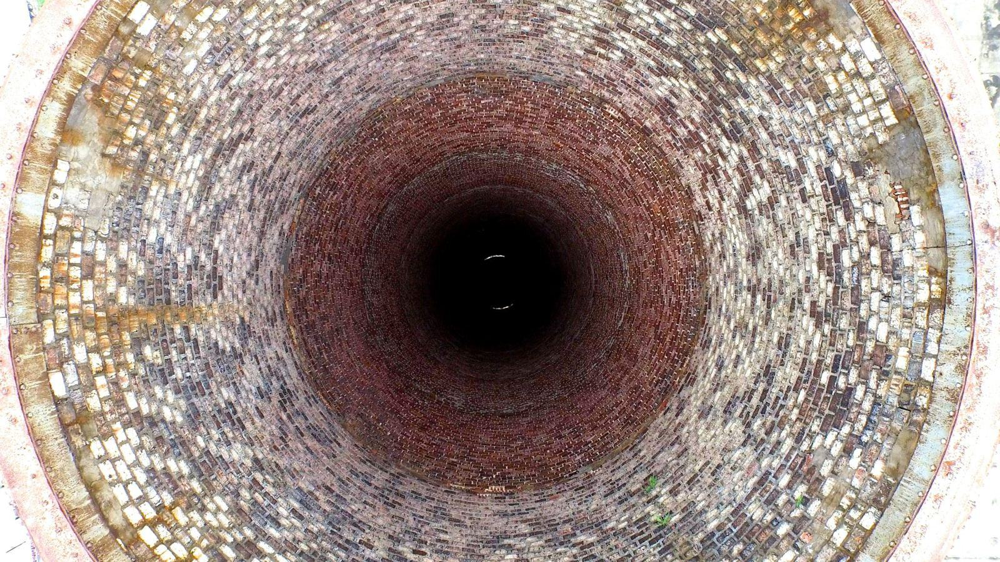
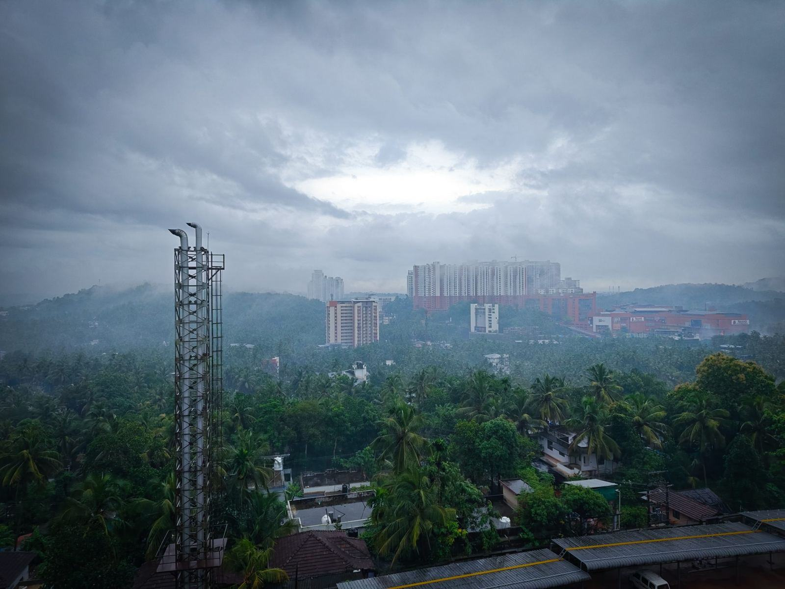

Vi sotar stugan medan du är där
Sotning och brandskyddskontroll i Orsa och Älvdalen, från villan i Orsa till stugan i Idre. Välj helg själv i bokningen.
Stugor, fäbodar och byar
- Pågående

Grönklitts stugby
64 uthyrningsstugor sotade på två dagar mellan två bokningsveckor i oktober.
- Pågående

Fäboden på Ärteråsen
Vedspis från 1860-talet med nytt rökrör, godkänd efter provtryckning.
- Utfört

Fritidshus i Idre
210 fjällstugor sotade under sex helger, med bild till varje ägare.
- Utfört

Skattungbyns bygdegård
Två kakelugnar och en vedspis i bygdens samlingslokal från 1923.
- Utfört

Särna camping
Sotning och kontroll av 22 stugor och servicehusets panna före vintersäsongen.
- Pågående

Fryksås fäbod
Tolv fäbodstugor med vedspisar – vi bar utrustningen sista 400 metrarna.
Hur ofta sotas mitt fritidshus?
Ett fritidshus som eldas sporadiskt sotas vart tredje år enligt kommunernas föreskrifter. Brandskyddskontroll görs vart åttonde år.
Måste jag vara på plats?
Nej. Du kan boka en helg när du är där, lämna nyckeln hos oss eller sätta upp ett nyckelskåp.
Vad kostar det att sota fritidshuset?
Sotning av en eldstad kostar 448 kronor plus grundavgift 286 kronor enligt kommunernas taxa 2026.
Kostar helgbokningen extra?
Nej, helgbokning kostar samma som vardag. Vi har valt att lägga en del av vår arbetstid på helger.
Sotar ni på vintern?
Ja, villor och stugor med plogad väg sotar vi året runt. Fjällstugor utan väg tar vi med snöskoter efter överenskommelse.
Vad händer om jag missar min tid?
Svara på sms:et senast dagen innan så bokar vi om utan kostnad. Missad tid utan avbokning debiteras med 350 kronor.
Vad har du för hus?
01Sotning
Avtalssotning i Orsa och Älvdalen enligt kommunernas frister.
Läs mer02Brandskyddskontroll
Lagstadgad kontroll, vart åttonde år för fritidshus.
Läs mer03Fritidshus
Välj helg själv och få bild på skorstenen när vi är klara.
Läs mer04Fäbodar
Vedspisar och murstockar på fäbodvallar utan väg ända fram.
Läs mer05Stugbyar
Samlad sotning för uthyrningsstugor i Grönklitt och Idre.
Läs mer06Nyckelservice
Lämna nyckeln hos oss eller i nyckelskåp – vi sotar när du inte är där.
Läs mer07Priser
Kommunernas taxa och vad som tillkommer.
Läs mer08Boka helg
Välj en helg mellan april och november.
Läs merEtt litet sotarlag med stort distrikt
Emma Jons och Linnéa Bäck utbildade sig till skorstensfejare samtidigt och arbetade fem år i Falun. När sotarmästaren Gösta Ersson i Orsa gick i pension 2021 tog de över hans kunder och vann sotningsavtalen i Orsa och Älvdalen – två kommuner med närmare 9 000 kvadratkilometer skog, fjäll och fäbodar.
Nytt från skogen och fjället

1 100 helgbokningar i år
Nästan var tredje fritidshusägare valde själv sin helg, och 94 procent var på plats när vi kom.
Läs mer
Fäboden på Ärteråsen
Vedspisen i en fäbodstuga från 1860-talet godkändes vid brandskyddskontrollen efter nytt rökrör.
Läs mer
En sotare till i Idre
Hampus Ersson, barnbarn till Gösta, börjar i januari och blir vår första sotare med bas i Idre.
Läs mer
Stugägare och grannar om oss
Kristina N. · Idre”Vi bor i Uppsala och har stugan i Idre. Att få välja helg själva och sedan se skorstenen på en bild – det är precis vad vi behövde.”
Lars E. · Fryksås”De bar upp sotarutrustningen till fäboden i regn utan att klaga. Gösta hade varit nöjd.”
Annelie S., stugbyföreståndare · Grönklitt”Alla 64 stugor sotade mellan två bokningsveckor, och fakturan kom på en gång.”
Boka din helg
Skriv fastighetens adress och vilka helgar som passar, så bekräftar Ingrid inom ett dygn.
- Telefon
- 070-174 06 86
- E-post
- hej@orsasotarna.se
- Öppettider
- Telefon mån–fre 8–15 · Sotning även helger apr–nov